I denna uppgift får du chansen att jobba vidare med spelet Bug Race. Du kommer få lägga till funktioner som omstart, flera liv och mat. Och du kommer få jobba med meddelanden, variabler och kloner.
Ett exempel på hur det kan se ut hittar du här: https://scratch.mit.edu/projects/196756892/
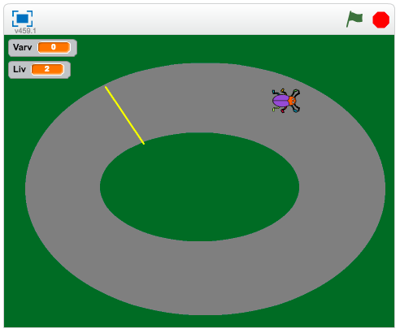
För att kunna jobba med denna uppgift måste du ha skapat ett färdigt spel Bug race som har några olika funktioner.
Har du kodat Bug race?
Om du inte är klar med Bug race får du börja med att göra klart det. Du hittar uppgiften här eller i menyn till höger.
Finns det en mållinje i spelet?
Om du inte har ritat till en mållinje och kodat vad som händer när skalbaggen kommer dit är det bra om du gör det. Du hittar uppgiften här.
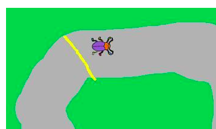
Finns det två spelare som tävlar mot varandra?
Det är okej om denna funktion är med. Men instruktionerna i denna uppgift är bara för ena spelaren. Men du kan självklart koda den andra spelaren själv.
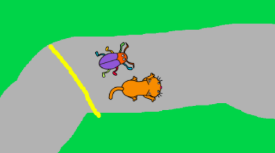
Nu är det dags att koda vidare på spelet!
Du ska koda så att skalbaggen inte dör om den nuddar gräset. I stället ska skalbaggen börja om från början. Det ska vi fixa med meddelanden.
Markera sprajten Skalbagge
Under Händelser hittar du ett block som heter "när jag tar emot..." – dra in det till kodytan.
Klicka på den lilla pilen bredvid meddelande1 och välj "nytt meddelande..."
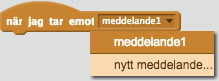
Kalla det nya meddelande "starta"
Flytta blocken som ligger under "När start klickas på" till under "När jag tar emot starta"
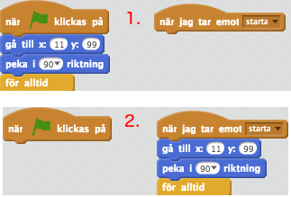
Lägg ett block "skicka start" under “När start klickas på”
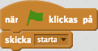
Nu fungerar programmet precis som förut, men vi vill ju att skalbaggen ska starta om när vi rör gräset.
Ta bort blocken som ligger i "OM rör färgen grön"-blocket
Lägg in ett block "skicka start" där istället.
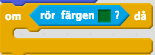
Testa! Startar skalbaggen om från början när den rör gräset?
Visst är det tråkigt att spelet tar slut när du kommit runt ett varv? Nu ska du koda så att skalbaggen kan åka flera varv.
Under Data klicka på "Skapa en ny variabel"
Döp variabeln till "Varv"
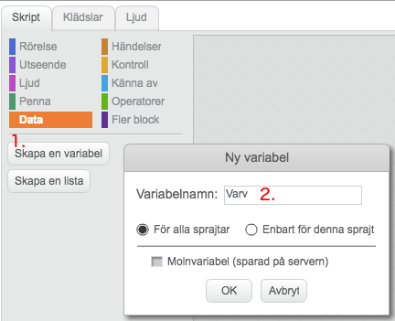
Ändra på koden för sprajten Skalbagge
Under "När start klickas på" dra in ett block “Sätt Varv till 0”
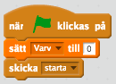
Ta bort koden som ligger i "OM rör mållinjen"-blocket
Skapa följande skript i stället när skalbaggen rör mållinjen
Säg "Mål" i 2 sekunder
Öka variabel "Varv" med 1
Skicka meddelandet "start"
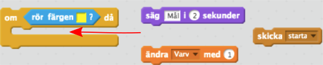
Testa! Vad händer om du går i mål?
Nu ska du få koda en till variabel som håller reda på hur många liv skalbaggen har. Den kommer minska om skalbaggen åker ut i gräset.
Lägg till en variabel som heter "Liv"
Sätt Liv till 4 när spelet startar
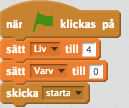
Lägg in följande kod när skalbaggen nuddar gräset, innan meddelandet starta skickas
Ändra Liv med -1
Skicka meddelandet "Game over?" och vänta
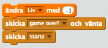
Skapa ett nytt skript för Skalbaggen som säger
När jag tar emot meddelandet "Game over?"
OM "Liv" < 1
Säg "Game over" i 2 sekunder
Stoppa alla
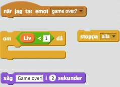
Tecknet "<" är en operator som betyder "mindre än". Alltså kommer spelet bara ta slut OM "Liv" är mindre än 1, det vill säga 0.
Test igen! Vad händer om du åker ut i gräset 4 gånger?
Det är tråkigt att bara förlora liv och till sist kommer skalbaggen dö. Därför ska du få koda en ny sprajt som föreställer mat till skalbaggen och som den kan äta för att öka antalet liv den har.
Skapa en ny sprajt som ska bli mat åt Skalbaggen. Här har jag använt mig av ett äpple, men du kan välja vad du vill!
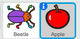
Placera den nya spratejn utanför banan
Skapa ett skript för Äpplet som säger
När start klickas på
Dölj
Gå tillbaka 1 lager
För alltid:
Vänta 3 sekunder
Skapa klon av mig själv
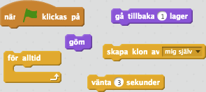
Detta skript kommer skapa en ny klon av sprajten var tredje sekund. En klon är som en kopia av en sprajt som beter sig precis på samma sätt som alla andra kloner. Om du tycker det skapas äpplen för ofta kan du ändra på vänta-blocket.
Testa spelet! Kommer det några äpplen på banan?
Nej, det ska du få koda nu.
Skapa ett nytt skript för Äpplet som säger
När jag startar som klon
Repetera tills rör färgen grå (färgen på banan):
Visa
För alltid:
OM rör skalbaggen:
Ändra "Liv" med 1
Radera klonen
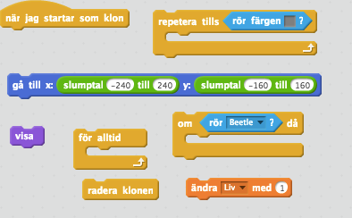
Den första loopen kommer placera klonen på en slumpmässig plats på banan. Och för alltid loopen ser till att äpplet försvinner om skalbaggen nuddar den.
Testa! Kommer det några äpplen på banan nu?
Det kommer ganska många äpplen faktiskt, och om inte skalbaggen hinner äta upp alla kommer hela banan vara fylld med mat.
Skapa ett tredje skript för Äpplet som säger
När startar som klon
Vänta 10 sekunder
Radera klonen
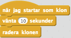
Grattis, nu har du skapat ett nytt spel!
Glöm inte att spara ditt projekt! Döp det gärna till uppgiftens namn så att du enkelt kan hitta den igen.
Testa ditt projekt
Visa gärna någon det som du har gjort och låt dem testa. Tryck på DELA för att andra ska kunna hitta spelet på Scratch. Gå ut till projektsidan och låt någon annan testa spelet!
Klocka
Koda en klocka som håller reda på hur länge du har spelet. Skapa en variabel som heter Tid och som ökar med 1 varje sekund.
Spelets slut
Just nu avslutas aldrig spelet och du kan fortsätta spela det så länge du vill och inte dör. Koda ett spelavslut, t.ex.
Du vinner när du klarat av 10 varv
Du vinner när du kommit upp i 20 liv
Du vinner när du spelat i 2 minuter
Flera spelare
Nu är det bara en spelare som du har kodat alla nya funktioner för. Koda en till sprajt som en kompis kan styra. Här är några tips:
Du måste ha en variabel "Liv" och “Varv” för varje spelare
Du måste skicka ett meddelandet Start2 för den andra spelaren
Sprajten Äpplet måste känna igen om den rör båda spelarna
Vad är en variabel?
Vad kan du använda ett slumptal till?
Vad är en klon?
Varför kan det vara bra att skapa kloner i stället för att bara kopiera en sprajt flera gånger?
Vad kan du använda ett meddelande till?